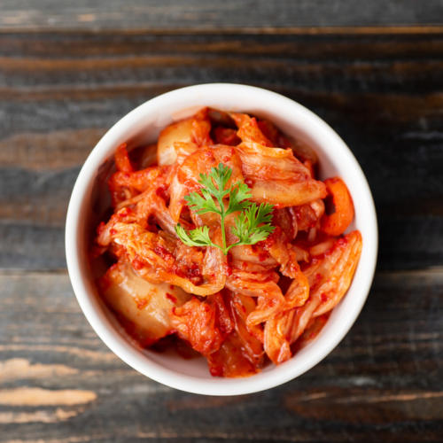

Süd Korea - 대한민국
Auf der koreanischen Halbinsel gelegen, bietet Südkorea eine bezaubernde Mischung aus alten Traditionen und modernster digitaler Technologie. Mit seinen malerischen Landschaften, seiner köstlichen Küche und seiner reichen Geschichte ist das Land ein Muss für jeden Reisenden.
Beliebte Ziele:
- Seoul: Die pulsierende Hauptstadt mit ihren Palästen, Märkten und dem ikonischen N Seoul Tower.
- Busan: Berühmt für seine schönen Strände, Berge und bunten Häuser.
- Jeju-Do: Ein vulkanisches Paradies mit einer malerischen Landschaft und Krabben als Gaumenschmaus.
Küche:
Die koreanische Küche, die für ihre reichhaltigen Aromen berühmt ist, besteht aus Gerichten wie Kimchi, Bulgogi und nahrhaften Suppen. Verpasse auf keinen Fall in Südkorea das berühmte koreanische Barbecue, mit tollen Beilagen und etwas Soju zu probieren.
Kultur:
Südkorea verfügt über eine tief verwurzelte Kultur, die sich nahtlos in die moderne Welt einfügt. Von traditionellen Tänzen und Musik bis hin zu Festen wie Chuseok und Lunar New Year ist das Erbe des Landes sowohl farbenfroh als auch tiefgründig.
Stadt Hightlights:
Seoul

Seoul, das Herz Südkoreas, ist eine wunderbare Mischung aus alten Palästen wie dem Gyeongbokgung und modernen Wolkenkratzern.
Busan

Mit seinen schönen Stränden und seinem pulsierenden Nachtleben ist Busan eine Stadt, die niemals schläft.
Jeju Island

Zaubere wie ein Magier:in mit der Schärfe: Kimchi
Kimchi ist ein traditionelles fermentiertes koreanisches Gericht, das hauptsächlich aus Chinakohl und koreanischen Radieschen besteht. Es bildet die Basis vieler Gerichte und eigent sich sehr gut als Beilage
Zum Rezept